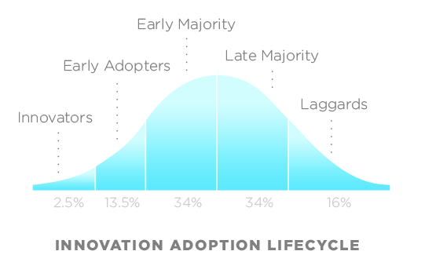
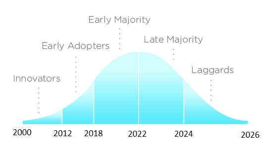
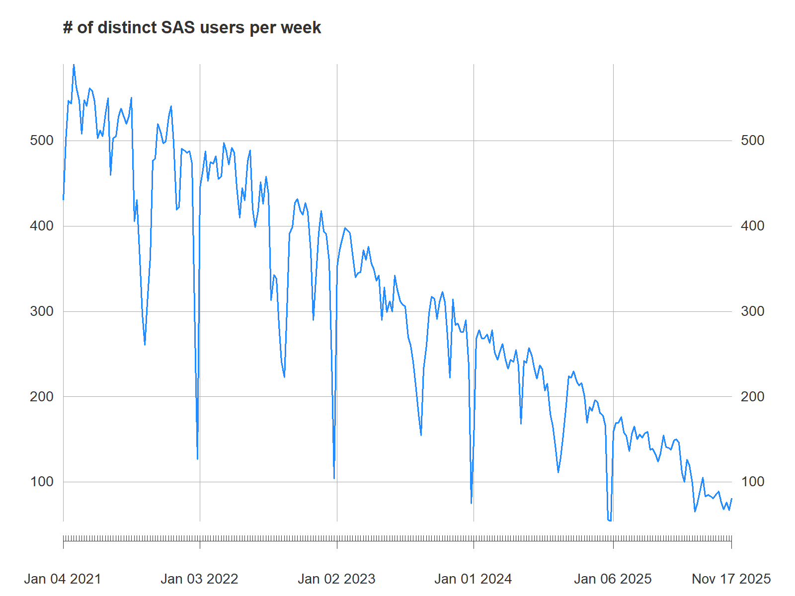
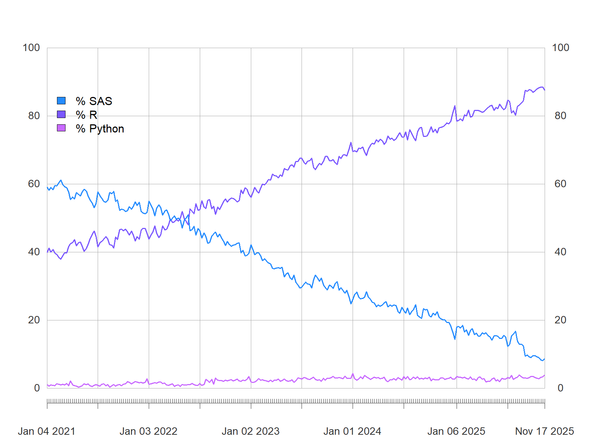

Open-source Software for the Implementation of New Statistical Methods
4th Workshop on Methodologies for Official Statistics
02/12/2025
Outline
1 Insee’s Journey Towards Adopting Open-Source
1.1 Diffusion of Innovations
Rogers, 1962

Source: Wikimedia Commons, licensed under CC BY-SA 3.0 Unported
1.2 Diffusion of Open-Source in INSEE
R adoption at INSEE: 1500 statisticians

Source: Wikimedia Commons modified by author, licensed under CC BY-SA 4.0
1.3 An Effective Decrease of SAS Users

Number of SAS users at INSEE
1.4 Open-Source Languages Adoption

Relative use of languages at INSEE
2 Open-Source Adoption Motivators
2.1 Innovators’ Motivators
~2000-2012:
- R graphical capabilities (
lattice) - Literate programming with R (
Sweave()) - Spatial data analysis using R (
sp)
2.2 From Innovators to Early Adopters
2012:
- First R user group in Paris (FL\tauR)
- The use of R officially recognized internally
- First RStudio server
2.3 Early Adopters’ Motivators
2012-2018:
- RStudio IDE
- Graphical capabilities (
ggplot2) - Literate programming (
knitr,rmarkdown) - Dataviz web applications (
shiny) - Data wrangling (
tidyverse,data.table) - First packages released on CRAN (
icarus,btb,gustave)
2.4 Getting the Early Majority
- 2018: all open source languages officially recognized
- 2018-2022: a collective skills upgrade
2.5 Moving away from proprietary languages
2022:
- 50% of the statistical scripts already been rewritten in R (voluntary initiatives)
- decision to use only open source languages from 2026 onwards (motivated by the increase in licensing costs)
- new internal environment for statisticians and data scientists based on Onyxia (vendor lock-ins have moved from languages to platforms)
parquetfiles to store and disseminate data (preference for a cross language file format)
2.6 From early majority to full adoption
2022-2025:
- mass trainings for late majority and laggards
- new trainings on Good Practices with git and R, Bringing Data Science Projects into Production
- an active community helping each other
- rewriting of the remaining codes (thanks to ChatGPT for helping us understand SAS programs)
- soft shutdown of SAS servers (09/2025)
- hard shutdown of SAS servers (24/12/2025)
3 The Main Challenge of Open-Source Adoption
3.1 Lack of alignment between IT and statisticians
- IT teams are risk averse: they are paid to provide stable IT environments
- Providing a working environment for R and python users is challenging: open source languages are unstable by nature
- R/python users need flexibility and IT need stability
Can we find a way out?
3.2 Tips for dealing with IT
Dean Marchiori’s post: “5 tips for dealing with IT”
- Have empathy: understand them and what they’re facing
- Political alignment: convince your manager to help you with IT
- Find supporters in IT
- Find (safe) workaround: there is always a grey area between what is allowed and what is not
- Buy commercially licensed software
3.3 Tips for dealing with IT
Dean Marchiori’s post: “5 tips for dealing with IT”:
- Have empathy: understand them and what they’re facing
- Political alignment: convince your manager to help you with IT
- Find supporters in IT
- Find (safe) workaround: there is always a grey area between what is allowed and what is not
Buy commercially licensed softwarenot always necessary
3.4 How did we align IT and statisticians?
- Political alignment: creation of an innovation team in the IT Department (2018)
- Mutual empathy between IT innovation team and statisticians
- Statisticians’ most valuable supporters
- Create workarounds for statisticians: sspcloud.fr
3.5 Towards a new deal between IT and statisticians
An official statistical office is a socio-technical system. We need:
- people (business units, methods, IT)
- data
- hardware
- software
- law and regulations
3.6 The technology that opened us new horizons

3.7 The benefits of containers
- From the outside, they are all identical: IT teams can learn to manage them routinely
- Inside, you can put what you want (any R version, R packages, system dependencies…)
- Containers are now the basis of all data platforms: IT in official statistics offices must learn to deal with them
- Containers also used in DevOps platforms
3.8 A new deal between IT and statisticians
- IT cares about containers orchestration and possible vulnerabilities inside them
- IT offers a flexible container based platform (many versions of R, python, IDEs…) and offers support
- IT recognizes statisticians as “citizen developers”:
- statisticians have extensive rights on the infrastructure
- statisticians are encouraged to apply software development good practices
- use of git is mandatory
- The DevOps principle applies: “You build it, you run it”
3.9 The modern statistician: a proposal
Uses open source languages
Adopts good practices for software development (version control, modular code, tests)
Manages the dependencies of her projects: packages and system dependencies (
renv,pak,rix…)Has the right (and know how) to build a docker image (linux 101)
Has the right to orchestrate workflows and deploy applications into production (DevOps)
If this is too much for statisticians, we may need to integrate engineers into the business/methods units
4 The Remaining Challenges
4.1 A wall of confusion between statisticians
- some statisticians (mostly managers) see R a new statistical “tool”. They focus on the product, not the process
- other statisticians (mostly the younger ones) see R as a programming language and recognize themselves as developers. They care about the process
- mass trainings on Good Practices with git and R for both R users and managers
4.2 The missing knowledge of statisticians in computer science
Statistical trainings in university lack solid basis in computer science:
- Academics have become too specialized
- Few academics also have a production experience
- Inspired by The Missing Semester of Your CS Education, we have created Bringing Data Science Projects into Production and proposed it to our academic partners
5 Take-Away Messages
5.1 Take-Away Messages
- Create a community of open-source users
- Invest in mass trainings
- Invest in your IT department
- IT must consider statisticians as (citizen) developers
- Statisticians must also be trained in computer science
- Don’t forget to train the middle management
- Romain Lesur
- Head of Data Science Lab
- romain.lesur@insee.fr


{kind=link}